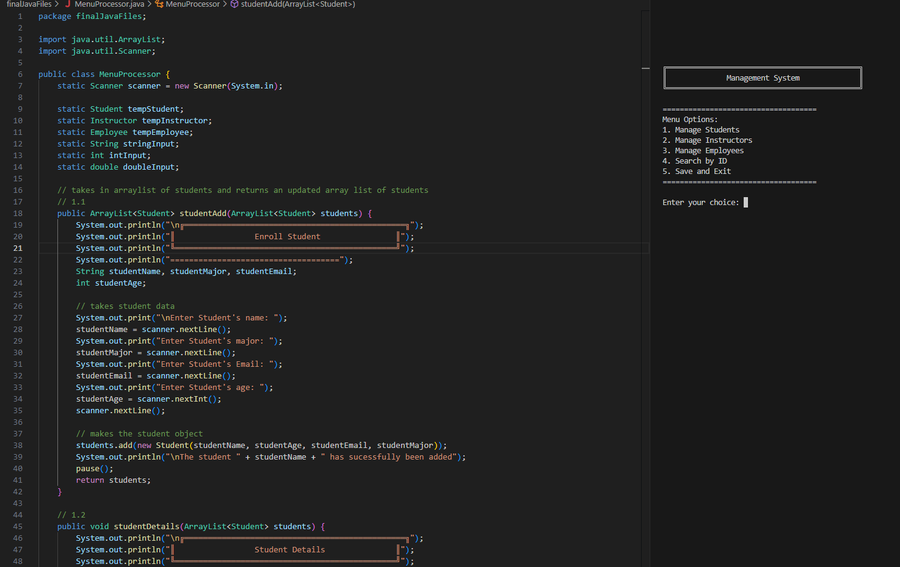
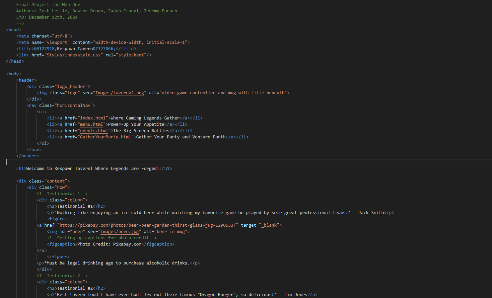
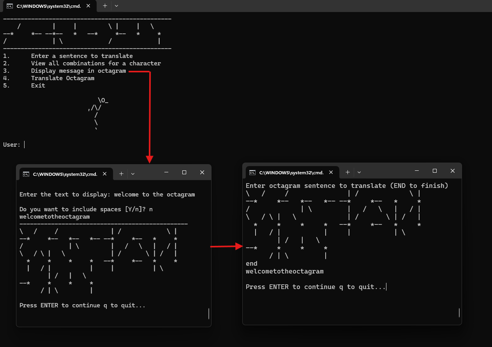
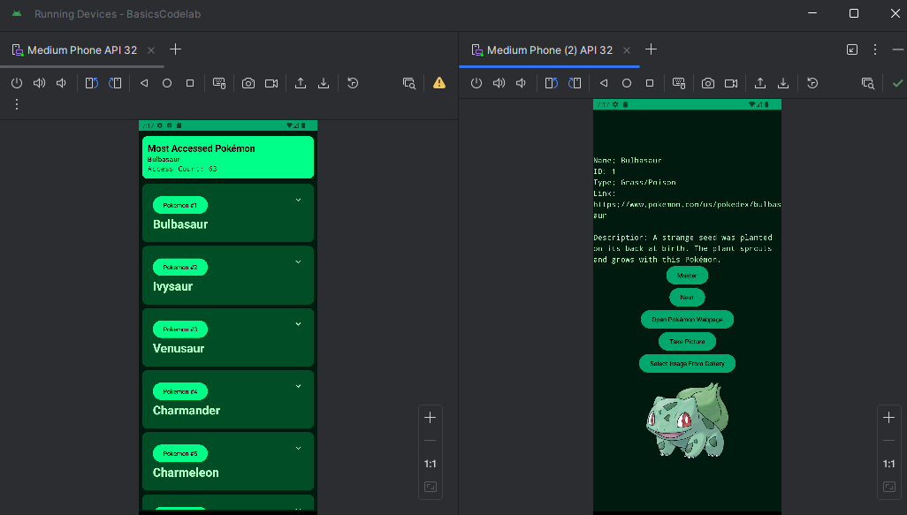

NSCC | IT Programming | Academic Year 2024-2026

Object Oriented Programming: Created algorithms to solve logic problems in Java. (PROG 2007).

Web Development Project: Built a responsive website using HTML, CSS, and JavaScript. (WEBD 1000).

Playing around in Java: Built a cipher along with its encoder and decoder through a cli using
java.
This cipher allows for multiple octagram characters for each characters making it extremely hard to
guess and brute force the answer.

Mobile Development Project Built a pokemon app that store images of each pokemon as blobs in the sql database.
This year, I enhanced my problem-solving ability and deepened my understanding of computer systems. From scripting to managing servers, each course helped me gain real-world skills and confidence in my abilities as a future IT professional.